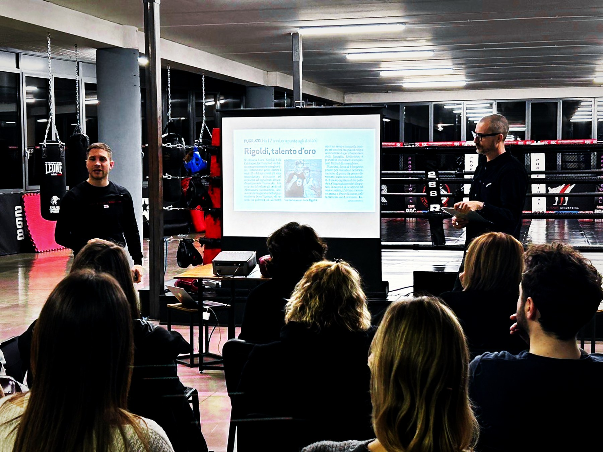

Spesso le aziende chiedono formazione quando il problema è già visibile: calo di energia, tensioni, comunicazione lenta, difficoltà tra reparti, leadership poco chiara o stress crescente. Ma prima di progettare un intervento serve una lettura ordinata dello stato di salute del team.
Che cosa significa leggere lo stato di salute del team
Significa osservare le dimensioni che influenzano la performance collettiva: chiarezza degli obiettivi, qualità della comunicazione, fiducia, gestione dei conflitti, leadership, responsabilità, stress e capacità di migliorare dopo un errore.
Perché una diagnosi rende la formazione più efficace
Senza diagnosi, il rischio è scegliere un format interessante ma non prioritario. Un team che vive conflitti nascosti ha bisogno di lavoro su comunicazione e fiducia. Un team sotto pressione deve allenare lucidità, energia e decisione. Un gruppo disallineato deve prima ritrovare direzione comune e accordi operativi.
Il ruolo dell'AI Team Check
L'AI Team Check BeOx è una prima porta di ingresso: non sostituisce l'analisi consulenziale, ma aiuta HR, manager e imprenditori a trasformare una percezione generica in segnali più chiari. Il report orientativo permette di iniziare una conversazione più concreta su bisogni, priorità e possibili percorsi.

Da insight a percorso
Quando il bisogno è chiaro, BeOx costruisce un percorso esperienziale: workshop, metafora sportiva, campioni, specialisti, debriefing e trasferimento operativo.